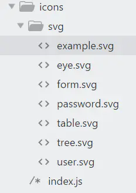
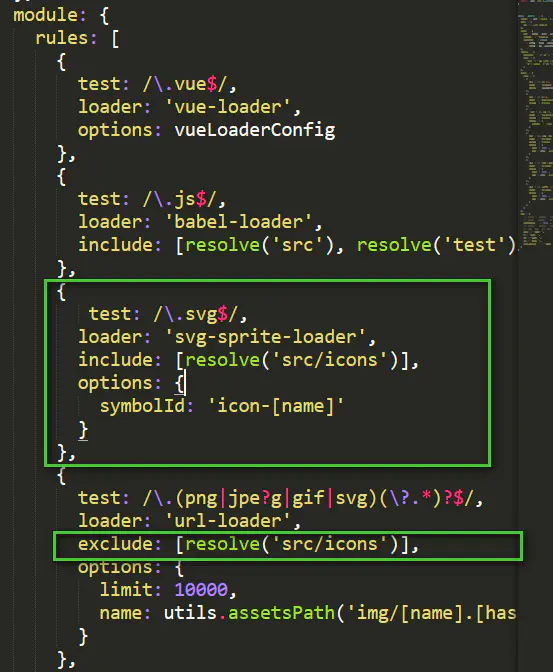

1.新建components/SvgIcon.vue组件
使用的是阿里巴巴的iconfont图标库，有三种方式可以引用，我使用的是symbol方式
1 | <template> |
2 svg文件
新建src/icons/svg文件夹和src/icons/index.js文件
svg文件夹放从图标库中下载的svg文件

src/icons/index.js文件
1 | import Vue from 'vue' |
3 在main.js中引入
1 | import '@/icons/index.js' |
4在组件中使用
1 | <svg-icon :icon-class="form"></svg-icon> |
5配置
下载插件
1 | npm i svg-sprite-loader --save |
在build/webpack.base.conf.js文件中，加入
1 | { |

总结
在icon-font的symbol使用方法中，一般是引入一个iconfont.js文件，但是这次并没有引入，主要是为了按需加载和便于添加新图标，不然每加入新的图标，就要覆盖iconfont.js文件一次，比较麻烦